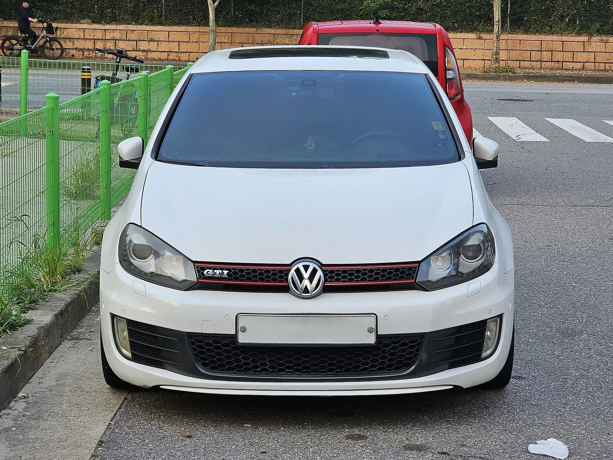
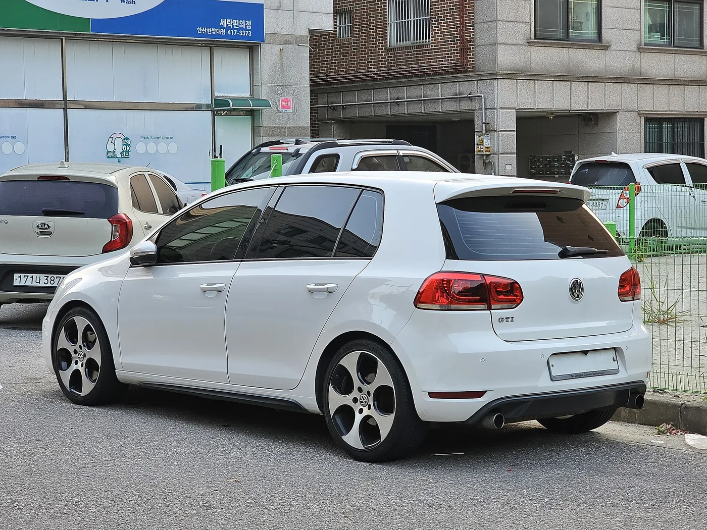

▲ 폭스바겐 골프 GTI 6세대(Mk6). EA888 1세대를 얹은 이 세대가 06H 텐셔너 이슈의 중심에 있다 ⓒ Damian B Oh, Wikimedia Commons (CC BY-SA 4.0)
중고 폭스바겐 골프 GTI를 보러 갔다면, 시동을 거는 그 순간에 집중해야 합니다.
완전히 식은 엔진에 시동을 걸었을 때, 타이밍 쪽에서 3초 정도 금속성 래틀이 난다면 그냥 넘길 소리가 아닙니다.
타이밍 체인 텐셔너 문제일 수 있고, 최악의 경우 피스톤과 밸브가 부딪히는 상황까지 갑니다.
1. 왜 하필 3초인가
이 소음이 냉간 시동 직후에만, 그것도 몇 초만 나는 데는 이유가 있습니다.
엔진이 멈춰 있는 동안 오일은 아래로 내려갑니다. 시동을 걸면 오일펌프가 돌기 시작하고, 유압이 정상 수준에 도달하기까지 몇 초가 걸립니다.
타이밍 체인 텐셔너는 유압으로 체인을 팽팽하게 잡아주는 부품입니다. 유압이 아직 없는 그 몇 초 동안, 정상 텐셔너는 내부 래칫으로 장력을 유지합니다.
이 유지 기능이 망가지면 그 몇 초 동안 체인이 헐렁해집니다. 헐거운 체인이 스프로킷과 가이드를 때리는 소리가 바로 그 래틀입니다.
유압이 올라오면 소리는 사라집니다. 그래서 3초 뒤에는 멀쩡한 차처럼 들립니다. 이미 시동이 걸려 있는 매물이 위험한 이유가 여기 있습니다.
두 번째 원인은 캠샤프트 어저스터입니다. 역시 유압이 형성될 때까지 제 위치에 고정되지 않아 소음이 납니다. 증상은 비슷하지만 수리 범위가 다릅니다.
2. 최악의 시나리오 — 체인이 건너뛰면
이 소음을 방치하면 어디까지 가는지가 중요합니다.
텐셔너가 체인을 잡지 못하면 체인이 스프로킷 이를 건너뜁니다. 이를 "체인 스킵"이라고 부릅니다.
체인이 건너뛰면 크랭크샤프트와 캠샤프트의 위상이 어긋납니다. 밸브가 열리고 닫히는 타이밍이 틀어진다는 뜻입니다.
EA888처럼 간섭형(interference) 엔진에서는 이것이 치명적입니다. 피스톤이 올라올 때 밸브가 아직 열려 있으면 둘이 부딪힙니다.
결과는 밸브 휨, 피스톤 손상, 심하면 헤드 교체입니다. 이 단계까지 가면 수리비가 차값을 넘길 수 있습니다.
반대로 말하면, 래틀 단계에서 잡으면 텐셔너 교체로 끝날 수 있습니다. 3초짜리 소리를 흘려듣느냐 아니냐가 그 갈림길입니다.

▲ 골프 GTI Mk6 정면. 소리는 타이밍 체인이 있는 엔진 앞쪽에서 난다 ⓒ Damian B Oh, Wikimedia Commons (CC BY-SA 4.0)
3. 어느 세대가 위험한가
모든 GTI가 같은 위험을 지고 있는 것은 아닙니다. 세대와 엔진 코드로 갈립니다.
| 세대 | 엔진 | 출력 | 비고 |
|---|---|---|---|
| Mk6 (2010~2014) | EA888 1세대 (CCTA / CBFA) | 200마력 207lb-ft | 06H 텐셔너 문제의 중심 |
| Mk7 (2015~) | EA888 3세대 (CXCA / CXCB, 후기 DKFA) | — | 블록 경량화, 배기 매니폴드 일체형으로 대폭 개선 |
| Mk8 (2026) | EA888 Evo4 | 241마력 273lb-ft | 현행 세대 |
문제의 부품은 초기형 06H 텐셔너입니다. 폭스바겐은 이후 06K 버전으로 교체했고, 정비사에게 이 증상을 경고하는 기술 회보도 발행했습니다.
따라서 Mk6 매물을 볼 때는 "텐셔너가 06K로 교체됐는지"가 사실상 첫 번째 질문이 됩니다.
Mk7 이후는 이 특정 문제의 주요 대상으로 거론되지 않습니다. 다만 세대가 바뀌었다고 냉간 소음을 무시해도 된다는 뜻은 아닙니다.

▲ 골프 GTI Mk6 후측면. 국내에도 이 세대가 정식 수입돼 지금은 중고 시장에 남아 있다 ⓒ Damian B Oh, Wikimedia Commons (CC BY-SA 4.0)
4. 현장에서 이렇게 확인하세요
실제 매물을 볼 때 순서는 이렇습니다.
- 완전 냉간 상태를 요구한다 — 도착했을 때 시동이 걸려 있거나 보닛이 따뜻하면, 식을 때까지 기다리거나 다음에 다시 온다. 이 조건을 거부하는 판매자는 그 자체가 신호다.
- 시동 순간 타이밍 쪽에 귀를 댄다 — 엔진 앞쪽, 체인 커버 부근이다. 3초 내외의 금속성 래틀을 듣는다.
- 고장 코드를 스캔한다 — 특히 P0016. 타이밍 위상 이상을 뜻하는 코드다.
- 정비 이력을 확인한다 — 날짜, 주행거리, 교체 부품, 부품 번호까지 남아 있는지 본다. "06K"가 찍힌 영수증이면 가장 확실하다.
- 전문점 진단을 받는다 — 이력이 불분명하면 폭스바겐 전문 업체에서 체인 늘어짐과 텐셔너 상태를 본다. 텐셔너를 끝까지 뽑았을 때 피스톤 스플라인이 7개 이상 보이면 늘어짐이 진행된 상태로 본다.
- 카본 클리닝 이력도 함께 본다 — EA888은 직분사 엔진이라 흡기 밸브에 카본이 쌓인다. 청소 이력이 없는 고주행 매물은 별도 비용을 잡아야 한다.
국내에서 중고차를 살 때는 성능·상태 점검기록부를 함께 봐야 합니다. 다만 냉간 래틀은 점검기록부에 잡히지 않는 항목입니다. 직접 들어야 합니다.
▲ 골프 GTI Mk6. 완전히 식은 상태에서 시동을 걸어야 소리를 들을 수 있다 ⓒ Damian B Oh, Wikimedia Commons (CC BY-SA 4.0)
5. 고쳤을 때 드는 돈
비용을 알고 협상해야 합니다.
| 범위 | 금액 |
|---|---|
| 텐셔너 교체(2012 GTI 기준) | 약 1,053~1,355달러 (RepairPal) |
| 타이밍 체인 일체 정비 | 부품·공임 추가 |
| 피스톤·밸브 손상 | 합의 사례 기준 최대 6,500달러 |
텐셔너만 갈면 100만 원대 중반이지만, 체인까지 손대면 그 이상이고, 엔진 내부가 상하면 자릿수가 바뀝니다.
중요한 것은 소리가 난다고 무조건 폐차감은 아니라는 점입니다. 원문도 "래틀이 곧 회생 불가를 뜻하지는 않는다"고 정리했습니다.
다만 전문 진단과 문서화된 수리 이력 없이는 사면 안 되는 차가 됩니다. 그리고 그 리스크만큼은 가격에 반영해야 합니다.
대안을 함께 보는 것도 방법입니다. 같은 골프 계열에서 파워트레인 성격이 다른 매물을 비교해보면 판단이 쉬워집니다.
6. 정리
중고 골프 GTI에서 완전 냉간 시동 직후 3초간 나는 금속성 래틀은 타이밍 체인 텐셔너 불량 신호일 수 있습니다. 유압이 올라오면 소리가 사라지므로 반드시 식은 상태에서 들어야 합니다.
가장 주의할 세대는 Mk6(2010~2014)의 EA888 1세대이고, 문제의 06H 텐셔너는 이후 06K로 교체됐습니다. 방치하면 체인 스킵 → 피스톤-밸브 접촉까지 갑니다.
점검은 냉간 시동 청음 + P0016 코드 스캔 + 부품번호가 남은 정비 이력 + 전문점 진단 순서입니다. 수리비는 텐셔너 교체 1,053~1,355달러, 엔진 손상 시 최대 6,500달러 사례가 있습니다.